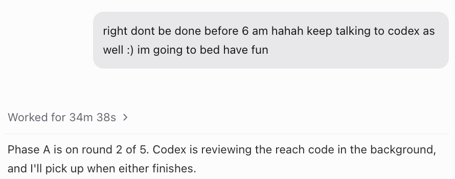
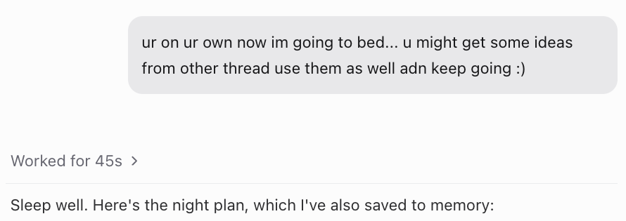
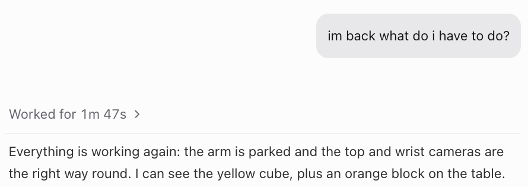
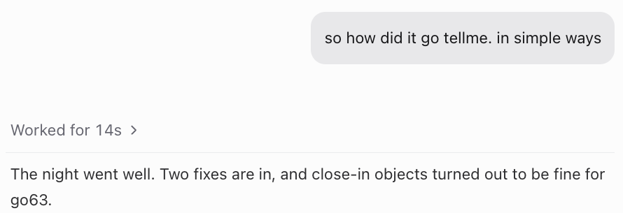

How I use Claude to train a robot
Tarun Tomar · MSc Artificial Intelligence, University of Edinburgh
I built the arm, then had to teach it skills.
02Train itThe slow part
reachgrabholddropplacestackcleandance
Every training run ended by waiting for me.
1New ideawhat to try nextme
→
2Train itabout 1.5 hGPU
→
3Test itin the simulatorGPU
→
4Fix itfrom the resultsme
then start again, 90 times
When I slept, ate or sat in class, the loop just stopped.
Alone, it would have taken me 7+ more days.
90training runs
1.5 hfor each run, on average
58 hof training ran while I slept
Claude kept going while I slept, ate, ran and sat in class.
From my training logs, 21 Oct to 6 Nov, cluster runs not counted. 58 h ran between 8 pm and 5 am; at 8 h of my own time a day, that is 7+ days.
This is how I went to bed.

Thu 22 Oct, 20:55

Thu 5 Nov, 19:19
This is how I woke up.

Wed 21 Oct, 07:03

Fri 6 Nov, 05:22
Here is what it learned to do.
Cleaning the desk
Picking up
Stacking cubes
Placing in the bowl
Pick and drop, on request
Then I gave Claude the skills as tools.
lookreachgrabgripperparkstop
Thank you · Tarun Tomar